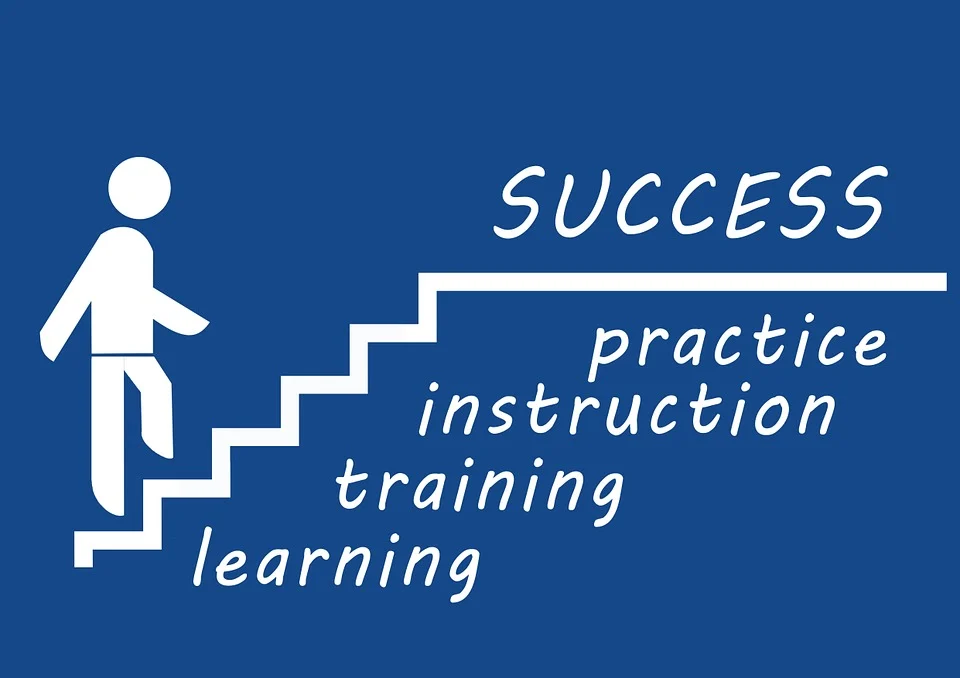

Importance of Career Counselling
Career steerage helps you to settle on an accurate career that suits
your temperament, interests and skill-set. choosing a right career is
incredibly vital.
In today’s world there also are numerous career decisions starting
from health sector to mass communications, engineering to event
management, marine biology to data technology, cooking arts to
music.
Career counseling may be a crucial issue for distinguishing the
important potential and guiding students towards a right career path.
Students ought to apprehend the importance of career work and right
steerage before they're about to select an instructional stream once
taking the board exams. Career counseling are going to be useful
selecting a career goal, designing and provides a direction to
students for a more robust future ahead.
Career steerage is additional valuable than ever these days. Let it's
a student WHO is nonplussed concerning that stream to settle on or an
expert WHO {is bothered|cares|thinks concerning|is concerned|worries}
about his career break. Career counseling has varied folds and it
helps students and professionals choose their dream career path.
Earlier many of us accustomed choose the career path as a result of
their friends and family told therefore, or simply since it's
questionable ‘popular’.
 - Promoting students
in creating well learned decisions concerning subjects will lead them
to possess a additional sanguine outlook on life, sense of purpose and
larger level of contribution that they create to their families and
society. There square measure profitable and social advantages once
students square measure supported to form effective changeovers from
lycee to any education.
- Promoting students
in creating well learned decisions concerning subjects will lead them
to possess a additional sanguine outlook on life, sense of purpose and
larger level of contribution that they create to their families and
society. There square measure profitable and social advantages once
students square measure supported to form effective changeovers from
lycee to any education.
Students tend to require recommendation from anyone they assume has
maturity within the field, however it should not perpetually be right
or not to mention be the simplest one. the trail followed by their
apparently no-hit peers may not facilitate them to achieve constant
destination, their mentor should have skillful failures themselves and
their oldsters may be unconcerned of the most recent trade demands. to
form certain that students have exactness of thought, career
counsellors should be created accessible for college kids in any
respect times whereas they're in highschool to get the proper and
latest recommendation.
A mass unit of scholars don't get skilled career steerage and
counseling, which may facilitate them in selecting what courses they
require to hunt. because of this, they ne'er get an opportunity to
understand the varied choices on the market for them supported their
power and delights. Recently, our college hosted the career truthful
wherever all the chief universities we have a tendency tore brought
underneath one roof so we as students, square measure exposed to
numerous routes of upper education.
Generally what Career message helps offer is perspective and
direction. The aim is to assist one discover their strengths,
weaknesses, likes/joys, dislikes and supply factors for thought in
selecting careers (Done through assessments). you may receive data
regarding given career interests as well as statistics like pay and
even an opportunity (depending on the program/counsellor) to shadow
somebody.
No one is in born proficient and every one in every of United States
needs steerage at some purpose in our life, at personal and skilled
levels. It makes United States additional aware, permits United States
to be told from others’ experiences, and helps United States create a
intelligent call.
A recent study shows that half-dozen in ten students aren't pleased
with the stream ar|they're} finding out and are disgruntled that any
ends up in poor performance. while not giving abundant thought,
students take up a theme and realises it solely when it too late. a
decent career message session will evade any confusion and facilitate
to eliminate any future regret.
Counselling helps students discover what they're captivated with and
educate them on the simplest thanks to pursue it. the advantages of
career message ar immense in nature and it's imperative that students
expertise it before they're going to school for education. this manner
they will be result in the correct career path and place in a very
favorable position to balance between their personal and business
life.
Folks ought to encourage career steerage take a look at for college
kids this can offer light to understand the unknows and that they will
get to understand loads regarding themselves that is de facto
essential. Correct steerage will create miracles happen because the
student would be actuated to attain a career of their selection and
that they would clearly apprehend their journey and destination.
within the side of carrer, a identified journey is best than
unknown.

Career councello contain power Tests that helps students to evaluate
there potential and conjointly helped to extend there temperament.
Aptitude tests digs deeper into understanding each student's
distinctive natural potential, a convergence of 3 aspects of
temperament, career interests and power. Discovery of students'
distinctive natural potential allows acceptable career recommendations
that ar best suited to the scholar. This ultimately ends up in
greatest chance for each skilled and private fulfilment, serving to
them 'become their best'.
Aptitude will develop your
- [ ] logical and analytical thinking.
- [ ] prediction and observation power.
- [ ] Memory, Concentration and Calculations.
- [ ] You higher cognitive process power. you'll take higher and
logical call on time.
- [ ] It will develop your logic and presence of mind.
- [ ] It will improve your intelligence, your IQ, EQ and SQ.
Above little little points imp for your different competitive test
like JEE , NEET etc.
Now it's not the case. With the assistance of a trained career
counsellor, you'll opt for your dream career path and follow your
passion.
Choosing the correct stream when category tenth is maybe the foremost
vital part of your career. If you're taking science stream, then you
have got choice to switch to commerce or arts at that time. however if
you choose for commerce then you can’t come to science.
What is Career Counselling?
Career message is outlined as a procedure for guiding students (10th
commonplace in our case) for selecting correct stream supported their
interests, data and power take a look at. timorousness or doubt
regarding career selecting selections will manipulate you at any
purpose of your life. So, career message makes the method selecting
stream easier and supported your actual interests. Also, there won’t
be any regret regarding {the calls|the choices|the selections} as you
may be totally aware in your mind that you just did take the correct
decision.
Why career message is vital ?
Career message helps students and professionals opt for the correct
career and create them realise their true potential. There ar a
inordinateness of career choices obtainable in today’s world. it's
humanly not possible {to apprehend|to understand|to grasp} regarding
every and each career path and know it’s execs and cons. A career
counsellor is AN skilled during this field. He/she has AN abundance of
information regarding every career and can assist you opt for your
dream career.
Why ought to I select CareerCouncello over different career message
Sites?
Our message services embrace power take a look at, instant graphical
take a look at analysis and private steerage by our counsellors when
the take a look at result at the negligible price obtainable within
the market. Also, as mentioned our take a look at includes five
totally different and vital classes that ar made in queries. These
queries ar ready by our counsellors particularly considering the
perspective of the scholars who’ll be confused regarding their call of
selecting stream and career. Our take a look at was exclusively
structured on targeting every class of career and conjointly as well
as the big selection of sub-options obtainable in it.
How career steerage works ?
Career Counselling involves scientifically developed power tests and
temperament tests that helps a career counsellor offer the simplest
suited career advice to the scholar supported his report of his
aptitude and personality. Human capacities ar infinite and may ne'er
be measured, nor ar we have a tendency to too decide of what one will
do. every body has distinctive characteristics, for everybody has his
or her own strengths and weaknesses.
“Information is that the key to success, anyplace and everyplace.
Right info matters the foremost. this is applicable to your work
place too.”
― Abhishek Ratna